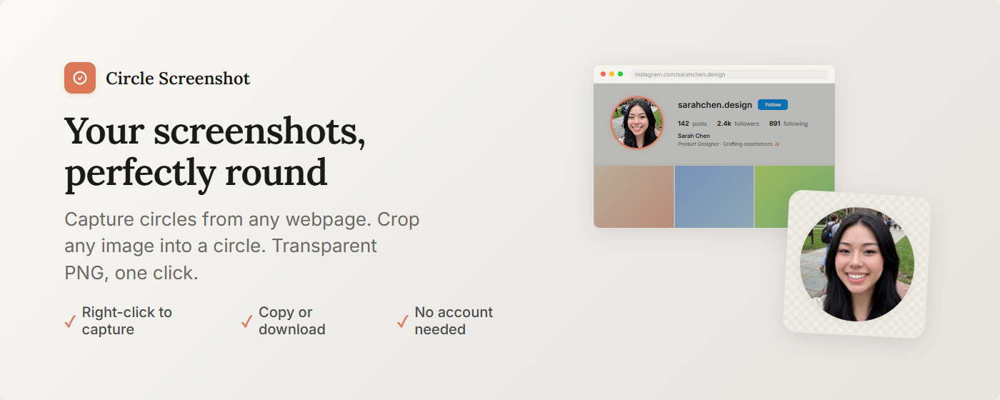
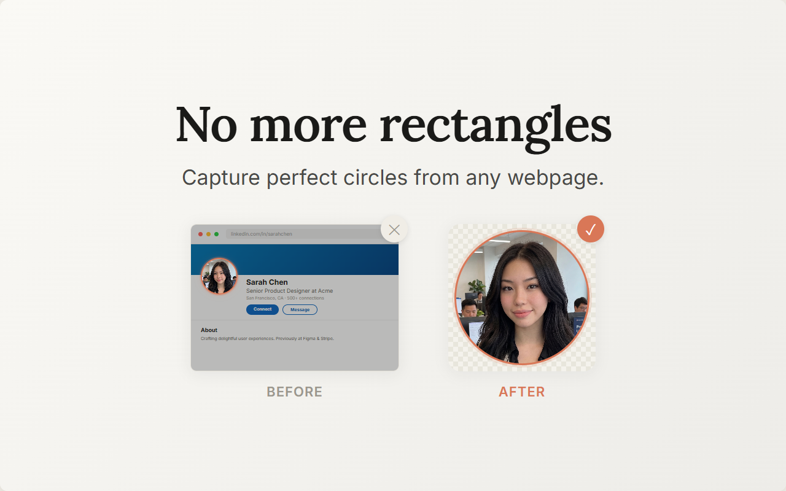
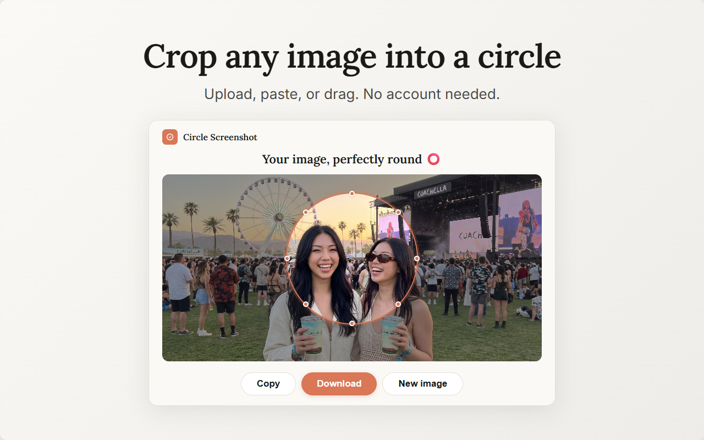
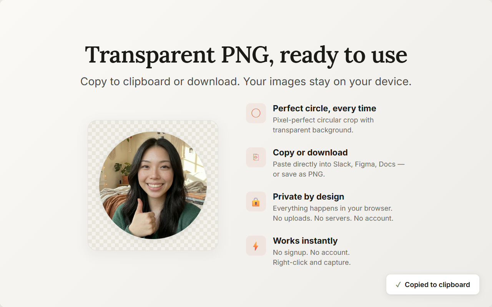

Circle Screenshot captures circular screenshots from any webpage — or crops any image into a perfect circle. Transparent PNG, ready to use. No more opening Photoshop. No more uploading to a crop website.
✦ Free forever · No account needed · Your images stay on your device

You just need a round image. Why is this so hard?
You need a circle for a profile picture, an avatar, a slide — but every screenshot tool and snipping tool gives you a rectangle.
Open the app, figure out the circular crop, get it to save without a background. All for one round image you needed in three seconds.
Find a circle crop site, upload your image to a stranger's server, wait, download. Every time you need a circle.

Three steps to a round screenshot. No account needed. No image editor. Just circles.
Right-click any page, select "Capture a circle screenshot," and drag. Your circle appears instantly — everything outside it dims so you see exactly what you're getting.
Move your circle, resize the edges, take your time. No rush, no starting over — just adjust until it's exactly what you want.
Save as a transparent PNG or copy straight to your clipboard. Your circular screenshot is ready to use — no background, no editing needed.
A circular screenshot tool and image cropper in one. Capture circles from live webpages. Crop uploaded images into circles. Both in Chrome, both private.

Pick any part of any webpage and capture it as a circle. A screen capture tool for Chrome that dims everything outside your selection so you see exactly what you're getting — then download or copy.
Upload, paste, or drag any image into the built-in cropper. Position your circle, adjust the size, and save — full quality, transparent background, without leaving your browser.
Your circles save as PNGs with a transparent background. No white box, no colored fill, no watermark — just your circle, full resolution, ready to place wherever you need it.
Paste your circle straight into Slides, Figma, email — anything that takes images. No downloading, no re-uploading. Capture, copy, paste.
Your circle capture lives in the right-click menu — no popup, no toolbar. Start capturing from the page you're already on. Or press Ctrl+Shift+O.
Your images never leave your device. Everything is processed locally in your browser — no uploads, no servers, no tracking. Free to use, no account needed. Your screenshots, your images, always yours.
If you've ever needed a round image and your tools only gave you a rectangle, this is for you.
Round profile pictures, circular avatars, and social assets for every platform
Circular headshots, round logos, and circle crops for slides, mockups, and decks
Need a round image without opening an image editor? This is it.
Everything you need to know about Circle Screenshot.
Circle Screenshot is a free Chrome extension that captures circular screenshots from any webpage and crops any uploaded image into a perfect circle. It exports transparent PNGs with no background — ready to use as profile pictures, avatars, thumbnails, or anywhere you need a round image.
Install Circle Screenshot, right-click any webpage and select "Capture a circle screenshot." Drag to draw your circle, adjust the size and position with handles, then click Download or Copy. Your circular screenshot saves as a transparent PNG — no image editor needed.
Open Circle Screenshot's crop mode, upload or paste any image, position the circle over the area you want, and click Download or Copy. The circular crop exports at full resolution with a transparent background. No Photoshop, no separate website — just a free circle image cropper inside Chrome. The fastest way to crop a photo into a circle.
Yes — Circle Screenshot is free with 3 circle screenshots per day. The free tier includes all features: capture mode, crop mode, transparent PNG, clipboard copy, full resolution. Pro removes the daily limit — $2.99/month or $12.99 for lifetime access.
100%. Circle Screenshot processes everything locally in your browser. Your images never leave your device — nothing is uploaded, nothing is tracked. No account is required. Payment is processed securely by Stripe. Your screenshots and crops are yours alone.
Yes — that's the point. Circle Screenshot replaces the need for Photoshop, Canva, or any circle crop website. Capture circles directly from webpages or crop uploaded images into circles — all inside Chrome, in seconds, with no image editor required. A snipping tool alternative that captures circles instead of rectangles. The simplest profile picture circle crop tool you'll find.
Circle Screenshot exports as transparent PNG — your circular image has no background. This means you can place it on any colored background, any slide, any design, and the circle blends naturally. No white box, no colored fill. Full resolution, no quality loss, no watermark.
Yes. Click Copy instead of Download and your circular screenshot is on your clipboard — paste it directly into Google Slides, Notion, Figma, email, Slack, or any tool that accepts images. No file download needed. Capture, copy, paste — three seconds.

Capture circle screenshots from any webpage. Crop any image into a circle. Transparent PNG, one click, always private. One browser extension, two modes, zero hassle.
Add to Chrome — It's FreeEffective Date: July 2025
Circle Screenshot ("the extension") is a circular screenshot and image cropping Chrome extension. Your privacy matters. This policy explains what information we collect, how we use it, and what choices you have.
We collect the minimum information necessary:
a) Locally Stored Data
All your screenshots, crops, preferences, and usage counters are stored locally on your device using Chrome's built-in storage API (chrome.storage.local). This data never leaves your device. We have no access to it. If you uninstall the extension, this data is automatically deleted.
b) Personal Information (Pro Upgrade Only)
If you purchase a Pro license, we collect your email address to process the transaction and manage your license. This is the only personal information we collect.
c) Anonymous Usage Analytics
We collect anonymous, non-personally-identifiable funnel events to understand feature usage and improve the extension. This does not include any personal information, image content, or browsing activity.
Stripe, Inc. — We use Stripe to process payments. When you purchase a Pro license, your email address is sent to Stripe. Card details are collected directly by Stripe through their secure checkout page and never touch our servers. See Stripe's Privacy Policy.
Our backend API is hosted by Railway. Data transmitted to our API (license validation, anonymous analytics) is sent over HTTPS encryption.
All data transmitted between the extension and our backend API is encrypted using HTTPS/TLS. Payment processing is handled by Stripe's PCI-compliant infrastructure. Your image data is processed locally and never transmitted anywhere.
You have the right to access, request deletion, or request portability of your personal data. To exercise these rights, contact us at the email below.
Legal basis: Contract performance (payment processing); Legitimate interest (anonymous analytics); Legal obligation (tax records). Data is transferred under Standard Contractual Clauses and the EU-US Data Privacy Framework. You may lodge a complaint with your local supervisory authority.
Categories collected: Identifiers (email), commercial information (purchase history). We do not sell your personal information. You have the right to know, request deletion, and opt out.
Circle Screenshot is not directed at children under 13. We do not knowingly collect personal information from children under 13.
Circle Screenshot's use of information received from Google APIs adheres to the Chrome Web Store User Data Policy, including the Limited Use requirements.
We may update this policy from time to time. Changes will be reflected by updating the effective date. Continued use of the extension constitutes acceptance of the updated policy.
If you have questions about this Privacy Policy, contact us at:
Email: circlescreenshot@gevias.com